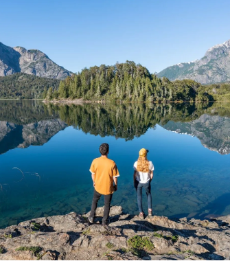
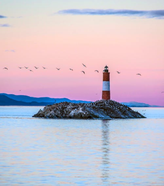
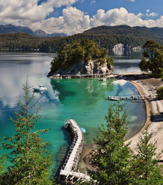
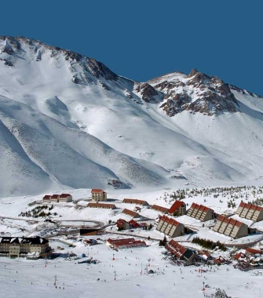
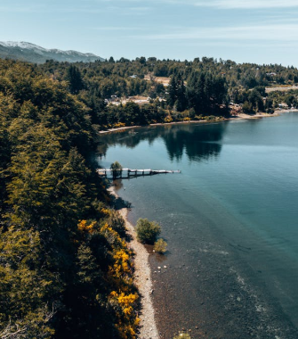
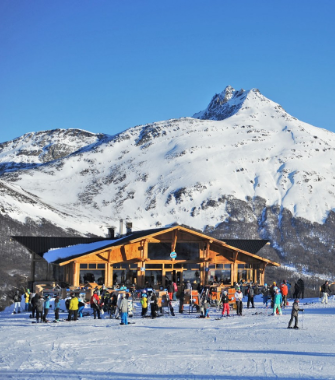
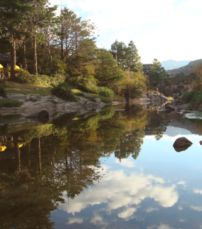
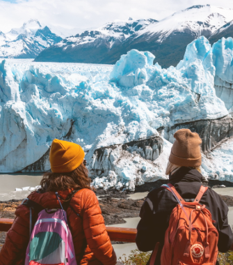

Lugares imperdibles
- 
- 
- 
- 
- 
- 
- 
- 
Bariloche, Río Negro
Destino clásico de invierno con paisajes nevados, esquí en el Cerro Catedral y chocolaterías tradicionales.
Ushuaia, Tierra del Fuego
La ciudad más austral del mundo, con el Parque Nacional Tierra del Fuego, excursiones en el Canal Beagle y centros de esquí.
San Martín de los Andes, Neuquén
Ideal para esquiar en Chapelco, recorrer el Camino de los Siete Lagos y disfrutar de la tranquilidad de la Patagonia.
Las Leñas, Mendoza
Uno de los centros de esquí más importantes de Sudamérica, perfecto para deportes invernales.
Villa La Angostura, Neuquén
Un destino de montaña con paisajes nevados, acceso al Cerro Bayo y arquitectura alpina.
Cerro Castor, Tierra del Fuego
La pista de esquí más austral del mundo, con nieve de calidad y vistas increíbles.
La Cumbrecita, Córdoba
Un pueblo peatonal con un encanto alpino, senderos entre bosques y cascadas, y clima frío en invierno.
El Calafate, Santa Cruz
Punto de acceso al Glaciar Perito Moreno, con excursiones sobre el hielo y paisajes patagónicos impresionantes.